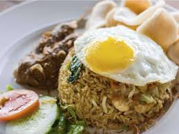
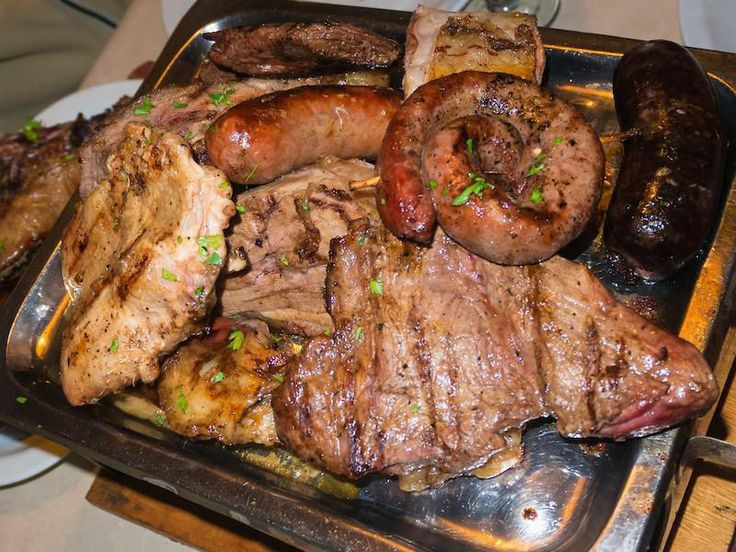
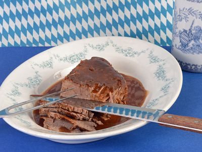
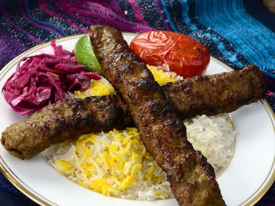

food
popular food in each country
China: Peking Duck

Population: 1.43 billion
Of course rice dishes are plentiful across the giant country of China, but if there is one must-try-in-your-life food in the nation (or really, anywhere), it's the Peking duck.
Originally created during the Ming dynasty, this delicacy hinges on two key steps. Step 1: Pump the duck with air so the skin separates from the meat. Step 2: Roast it until the skin becomes thin and crisp. A sweet bean sauce often provides accompaniment.
India: Khichdi

Population: 1.37 billion
There isn't a national dish of India, as its various regions can be so different and enjoy their own flavors. But one of the most popular dishes in the country is khichdi. This rice and lentils meal varies by region in terms of ingredients, with ghee and tamarind often making an appearance. It pairs particularly well with an omelet.
Khichdi is such a staple that it is often the first solid food enjoyed by infants.
Indonesia: Nasi Goreng

Population:329.1 million
Nasi goreng is similar to fried-rice dishes found across Asia, but is a bit thicker and sweeter. Using a soy sauce that is, as its name implies, more like ketchup (kecap), the rice gets filled with pickled cucumbers, acar and carrots.
It is often topped with a fried egg, a touch that very much works.
Argentina: Asados

Population:44.8 million
Argentinian steakhouses are renowned the world over, and as such asados is a must when visiting the South American country. Basically, asados is a variety of grilled meats, including steak, sausages and barbecued ribs — a carnivore's feast!
Germany: Sauerbraten

Population:83.5 million
It's not a sausage that is the national dish of Germany but another comfort food: sauerbraten. This pot roast, most often made with beef, is marinated and slow-cooked until tender, then served in its own sweet-and-sour gravy of ingredients. More, please.
Iran: Chelow Kabab

Population:82.9 million
More than just a meaty kebab, Iran's national dish is the meal of kebab served with a saffron Persian rice. Iranian kebabs are made with ground lamb or beef and mixed with chopped onions and parsley. It's a humble dish, but often the best ones are.
Italy: Bolognese

Population:60.6 million
Of all the pasta dishes that are eaten in Italy, bolognese is one of the most popular. Forget pasta with meatballs; this flat tagliatelle pasta topped with a meaty ragu practically guarantees meat in every bite.
Egypt: Koshari

Population:100.4 million
This classic street food can be found everywhere in Egypt. And we mean everywhere! The mixture of rice, pasta and beans known as koshari gets topped with a spicy, yet sweet, creamy tomato sauce. The dish originated in India as khichri and was brought to Egypt with the British.
for more food check this link
popular food in each country